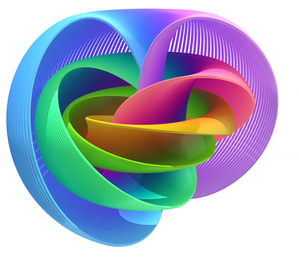

lab
Collaboration and mentorship are some of my favorite aspects about research. I am always looking for new students and postdocs to work with. If you are interested in working with me, please read the "prospective members" section of this page. This section includes details for students who are not at BYU but are still interested in working with me. I also have a resource page that is primarily intended for students working with me.
All of my research involves algebra, geometry, or topology in some way, but I am also interested in applying these areas of math to physics and biology. For more details and some suggested prerequisites, see the "topics" section of this page.
topics ∨∧
I am interested in a broad range of subjects, so there is some flexibility on what your research project can be about. Below are some broad topics you could research with me, along with the classes you might need in preparation for such a project. These classes are not hard requirements, but rather suggested prerequisites.
algebra

Algebra is the study of symmetry. These symmetries may be concrete, geometric symmetries, or they may arise in more abstract contexts. Either way, symmetry can be encoded in mathematical objects known as groups, rings, and fields. These play a fundamental role in modern algebra.
Just as graphing gives shape to a polynomial, one can associate geometric objects to groups, rings, and fields. These geometric objects are the key elements in algebraic geometry. Algebraic geometry can be viewed as a sort of dictionary, allowing one to translate back and forth between algebraic and geometric perspectives. For example, counting the solutions to a system of polynomial equations can be reinterpreted as counting the intersections of a collection of surfaces, which is amenable to geometric techniques.
Suggested prerequisites include group theory (Math 371), rings and fields (Math 372), and algebraic geometry (Math 561).
topology
Geometry is the quantitative study of shape, in which one uses measurements such as angles and distances. In the absence of such metrics, one has to rely on other, more qualitative characteristics of shape. Topology is the qualitative study of shape.
My research in topology mostly circles around algebraic topology, where certain features of shapes are measured in things like groups and rings. Algebraic topology turns out to be a very powerful toolkit when it comes to how shapes deform or relate to each other under continuous functions. A notable example is cobordism theory, where two manifolds are considered equivalent if they jointly form the boundary of some other manifold. Although cobordism theory is inherently geometric, algebraic topology has become one of the primary tools in the subject.
Suggested prerequisites include group theory (Math 371), topology (Math 451), and differential geometry (Math 465).
biology

Many morphological classifications in biology are built out of subjective observations. Topology, the study of shape, can be used to quantify morphologies, yielding more objective classifications. The network of neurons in an organism (known as the connectome) is an incredibly complicated structure to which these tools can be applied. Another application is to structural cytology and histology, by comparing the form of healthy cells and tissues to their cancerous counterparts.
Data also has an intrinsic shape, which can be used to help analyze large and complicated data sets. Such data sets naturally arise in genomics. Potential projects in this area entail analyzing the shape of genomic data to answer questions in genetic evolution or epidemiology.
Lab members working on these topics should have some experience coding (e.g. Python) and working with data. Suggested mathematics prerequisites include graph theory (Math 355), group theory (Math 371), and topology (Math 451). Suggested biology prerequisites include cell biology (Cell 360) and genetics (PWS 340).
physics

Many of my mathematical interests arise in quantum field theory, the unification of classical mechanics, special relativity, and quantum mechanics. Homotopy theory has found a fundamental role in certain types of quantum field theories, such as topological field theories and invertible field theories. This has also led to applications of homotopy theory to condensed matter physics, like classifying exotic insulators, superconductors, and other phases of matter.
Quantum field theory also predicts how particles scatter in high-energy collisions. Particle accelerators generate experimental data in an effort to corroborate these theoretical scattering amplitudes. Remarkably, there are some intricate connections between scattering amplitudes and number theory. This means that one can use both theoretical and experimental physics to study mathematical objects such as group representations or modular forms.
Suggested mathematics prerequisites include group theory (Math 371), topology (Math 451), representation theory (Math 473), and number theory (Math 487). Suggested physics prerequisites include electrodynamics (Physics 442) and quantum mechanics (Physics 451). If you are interested in working with collider data, some experience with coding (e.g. Python) and working with data would be preferable.
prospective members ∨∧
If you join my lab, we will work together to select a research topic and a project at a level appropriate for your background. Depending on the project and your preferences, you might be collaborating with other group members on this project. Also depending on the project and your preferences, I might co-author a research paper with you or merely supervise as you write a paper yourself.
Beyond the project, members of the lab are given the flexibility to pursue independent research. All lab members are encouraged to form their own research questions, learn new material, and investigate ideas of interest.
undergraduates
When you learn math in a class, you generally have people around you who know how to solve any problem you are stuck on. These people might be the teacher, teaching assistants, or even your peers. Research is like trying to learn a subject, but without the guarantee that anybody around you knows how to solve your problem. What's more, the problem you are trying to solve may not even have a solution. Of course, there are still people around who can help to mentors, collaborators, and peers. But the uncertainty associated with a research question gives the whole endeavor a different feel than can be found in the classroom.
The best, and perhaps only, way to find out if you like research is to get involved. There are lots of careers in industry and academia that involve research, and doing undergraduate research is a great way to gauge your interest in such a career. Regardless of the career you choose, you will also develop skills that would be valuable in almost any creative or technical job.
As an undergraduate research assistant in my lab, you will be paid $14/hour for your work. Your hours and location are flexible, but you should plan on working at least 10 hours and no more than 20 hours each week. These working hours may entail proving theorems, writing code, analyzing data, writing a paper, presenting your research, or attending seminars and group meetings. You will likely be collaborating with other undergraduate research assistants.
If you are interested in joining the lab, please send me an email with a brief description of your interests, background, and career goals. It's okay if your career goals are still tentative. Please also include a resume and an unofficial transcript in your email.
Note that external students are generally not eligible for a paid research assistantship. Under exceptional circumstances, I may consider an undergraduate student at an institution other than BYU. If you believe your circumstances are exceptional, please send me an email with a brief description of your interests, background, and career goals. Please also include a resume and an explanation of why you want to work with me. I will let you know if I decide to work with you. I will try to respond to your email even if I decide not to work with you, but I may not have time due to the number of emails I receive.
graduates
If you are a current BYU graduate student, please send me an email with a brief description of your interests, background, and career goals. We can then schedule a meeting to discuss potential projects.
If you are not yet a graduate student but would like to work with me at BYU, please apply to the BYU Department of Mathematics. You are welcome to reach out to me before you apply, but I cannot estimate your chances of acceptance to the program.
I am open to co-advising PhD students at institutions other than BYU. In exceptional circumstances, I will also co-advise masters students at other institutions. If you would like to ask me to be your co-advisor, please discuss the matter with your current advisor first. If your advisor agrees, then please send me an email with a brief description of your interests, background, and why you would like me to co-advise you. Please also CC your advisor in the email.
postdocs
If you are interested in working with me as a postdoc, please send me an email.
current members ∨∧
undergraduates
| Started | Name | School | Type | Topic |
|---|---|---|---|---|
| 2025 | Sia Adhikari | BYU | Research assistant | Tolerants, ring learning with errors |
| 2025 | Andrew Belz | BYU | Research assistant | Moments of conditional clique homology |
| 2025 | Max Brown | BYU | Research assistant | Ring learning with errors |
| 2026 | Riley Forte | BYU | Research assistant | Algebraic model of π5(S3) |
| 2025 | Brent Hall | BYU | Research assistant | Tolerants, asymptotic torsion of spin bordism |
| 2025 | Lane Lindstrom | BYU | Research assistant | Asymptotic torsion of spin bordism |
| 2025 | Sarah Lingwall | BYU | Research assistant | Machine learning the inverse Galois problem |
| 2025 | Zach Mattson | BYU | Research assistant | Machine learning the inverse Galois problem |
| 2025 | Carl Miao | BYU | Research assistant | Moments of conditional clique homology |
| 2025 | Pearson Morris | BYU | Research assistant | Moments of conditional clique homology |
| 2025 | Daphne Plott | BYU | Research assistant | Ring learning with errors |
| 2025 | Jack Rich | BYU | Research assistant | Machine learning the inverse Galois problem |
| 2025 | Coby Sandholtz | BYU | Research assistant | Moments of conditional clique homology |
| 2025 | Parker Torgersen | BYU | Research assistant | Ring learning with errors |
| 2026 | Sebastián Torres | BYU | Research assistant | Algebraic model of π5(S3) |
masters
| Started | Name | School | Type | Topic |
|---|---|---|---|---|
| 2024 | Louis Burton | Sorbonne | Master's thesis | Chow—Witt groups |
former members ∨∧
undergraduates
| Years | Name | School | Type | Topic | Placement | Links |
|---|---|---|---|---|---|---|
| 2025 | Cannon Beal | BYU | Research assistant | Asymptotic torsion of spin bordism | Undergrad at University of Michigan | |
| 2025 | Kai Rex | BYU | Research assistant | Asymptotic torsion of spin bordism | ||
| 2025 | Casey Rogers | BYU | Research assistant | Machine learning the inverse Galois problem | ||
| 2025 | Thea Spigarelli | BYU | Research assistant | Asymptotic torsion of spin bordism | ||
| 2025 | Brandon Velez | BYU | Research assistant | Moments of conditional clique homology | ||
| 2024 to 2025 | Lev Kruglyak | Harvard | Senior thesis | Geometry, topology, and exotic spheres | Friends Prize | |
| 2023 to 2024 | Helen Dai | Harvard | Senior thesis | Examples of exotic R4s | Math PhD at University of Minnesota | |
| 2022 to 2024 | Jonathan Buchanan | Harvard | Senior thesis and research assistant | Variants of spin cobordism | Math PhD at MIT | Hoopes Prize |
collaborators ∨∧
| Name |
|---|
| Swechchha Adhikari |
| Dori Bejleri |
| Thomas Brazelton |
| Jonathan Buchanan |
| Robert Burklund |
| Cameron Darwin |
| Arun Debray |
| Felipe Espreafico |
| Aygul Galimova |
| Miao (Pam) Gu |
| Brent Hall |
| John Igieobo |
| Enis Kaya |
| Cameron Krulewski |
| Mario Kummer |
| Daniel Minahan |
| Michael Montoro |
| Giosuè Muratore |
| Wern Juin Gabriel Ong |
| Morgan Opie |
| Sabrina Pauli |
| Steven Sanchez |
| Frank Sottile |
| Sam Streeter |
| Dae'Shawn Taylor |
| Happy Uppal |
| Kirsten Wickelgren |
| Tianyi Zhang |